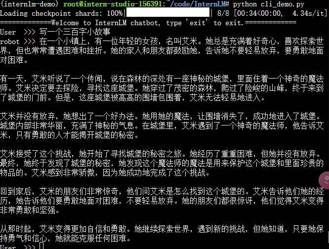

对话Demo
环境准备
在 InternStudio 平台中选择 A100(1/4) 的配置，如下图所示镜像选择 Cuda11.7-conda
进入 conda 环境之后，使用以下命令从本地克隆一个已有的 pytorch 2.0.1 的环境
- bash
- bash /root/share/install_conda_env_internlm_base.sh internlm-demo
- conda activate internlm-demo
并在环境中安装运行 demo 所需要的依赖。
python -m pip install --upgrade pip
pip install modelscope==1.9.5
pip install transformers==4.35.2
pip install streamlit==1.24.0
pip install sentencepiece==0.1.99
pip install accelerate==0.24.1
模型下载
新建 download.py 文件并在其中输入以下内容，粘贴代码后记得保存文件，如下图所示。并运行 python /root/model/download.py 执行下载，模型大小为 14 GB，下载模型大概需要 10~20 分钟
import torch
from modelscope import snapshot_download, AutoModel, AutoTokenizer
import os
model_dir = snapshot_download('Shanghai_AI_Laboratory/internlm-chat-7b', cache_dir='/root/model', revision='v1.0.3')
代码下载
cd /root/code
git clone https://gitee.com/internlm/InternLM.git
cd InternLM
代码更改
将 /root/code/InternLM/web_demo.py 中 29 行和 33 行的模型更换为本地的 /root/model/Shanghai_AI_Laboratory/internlm-chat-7b。
终端对话
在 /root/code/InternLM 目录下新建一个 cli_demo.py 文件，将以下代码填入其中：
import torch
from transformers import AutoTokenizer, AutoModelForCausalLM
model_name_or_path = "/root/model/Shanghai_AI_Laboratory/internlm-chat-7b"
tokenizer = AutoTokenizer.from_pretrained(model_name_or_path, trust_remote_code=True)
model = AutoModelForCausalLM.from_pretrained(model_name_or_path, trust_remote_code=True, torch_dtype=torch.bfloat16, device_map='auto')
model = model.eval()
system_prompt = """You are an AI assistant whose name is InternLM (书生·浦语).
- InternLM (书生·浦语) is a conversational language model that is developed by Shanghai AI Laboratory (上海人工智能实验室). It is designed to be helpful, honest, and harmless.
- InternLM (书生·浦语) can understand and communicate fluently in the language chosen by the user such as English and 中文.
"""
messages = [(system_prompt, '')]
print("=============Welcome to InternLM chatbot, type 'exit' to exit.=============")
while True:
input_text = input("User >>> ")
input_text = input_text.replace(' ', '')
if input_text == "exit":
break
response, history = model.chat(tokenizer, input_text, history=messages)
messages.append((input_text, response))
print(f"robot >>> {response}")
然后在终端运行以下命令，即可体验 InternLM-Chat-7B 模型的对话能力。
python /root/code/InternLM/cli_demo.py
web对话
先运行 /root/code/InternLM 目录下的 web_demo.py 文件，输入以下命令
bash
conda activate internlm-demo
cd /root/code/InternLM
streamlit run web_demo.py --server.address 127.0.0.1 --server.port 6006
如果在云环境运行，想要在本地查看，需要使用ssh将云环境的6006端口映射到本地。方法：
1、本地ssh公钥上传云环境。复制本地公钥内容,回到 InternStudio 控制台，点击配置 SSH Key。将刚刚复制的公钥添加进入即可。
2、点击InternStudio 的ssh连接，查看ssh连接命令的-p参数后的端口号，例如是33090
3、运行
ssh -CNg -L 6006:127.0.0.1:6006 root@ssh.intern-ai.org.cn -p 33090
最后，要在浏览器打开 http://127.0.0.1:6006 页面后，模型才会加载，如下图所示：
Lagent的Demo
环境准备
同上
模型下载
在 /root/model 路径下新建 download.py 文件并在其中输入以下内容，并运行 python /root/model/download.py 执行下载，模型大小为 14 GB，下载模型大概需要 10~20 分钟
import torch
from modelscope import snapshot_download, AutoModel, AutoTokenizer
import os
model_dir = snapshot_download('Shanghai_AI_Laboratory/internlm-chat-7b', cache_dir='/root/model', revision='v1.0.3')
代码下载
克隆 lagent 仓库，并通过 pip install -e . 源码安装 Lagent
cd /root/code
git clone https://gitee.com/internlm/lagent.git
cd /root/code/lagent
pip install -e . # 源码安装
修改代码
为演示web上demo，
将 /root/code/lagent/examples/react_web_demo.py 内容替换为以下代码
import copy
import os
import streamlit as st
from streamlit.logger import get_logger
from lagent.actions import ActionExecutor, GoogleSearch, PythonInterpreter
from lagent.agents.react import ReAct
from lagent.llms import GPTAPI
from lagent.llms.huggingface import HFTransformerCasualLM
class SessionState:
def init_state(self):
"""Initialize session state variables."""
st.session_state['assistant'] = []
st.session_state['user'] = []
#action_list = [PythonInterpreter(), GoogleSearch()]
action_list = [PythonInterpreter()]
st.session_state['plugin_map'] = {
action.name: action
for action in action_list
}
st.session_state['model_map'] = {}
st.session_state['model_selected'] = None
st.session_state['plugin_actions'] = set()
def clear_state(self):
"""Clear the existing session state."""
st.session_state['assistant'] = []
st.session_state['user'] = []
st.session_state['model_selected'] = None
if 'chatbot' in st.session_state:
st.session_state['chatbot']._session_history = []
class StreamlitUI:
def __init__(self, session_state: SessionState):
self.init_streamlit()
self.session_state = session_state
def init_streamlit(self):
"""Initialize Streamlit's UI settings."""
st.set_page_config(
layout='wide',
page_title='lagent-web',
page_icon='./docs/imgs/lagent_icon.png')
# st.header(':robot_face: :blue[Lagent] Web Demo ', divider='rainbow')
st.sidebar.title('模型控制')
def setup_sidebar(self):
"""Setup the sidebar for model and plugin selection."""
model_name = st.sidebar.selectbox(
'模型选择：', options=['gpt-3.5-turbo','internlm'])
if model_name != st.session_state['model_selected']:
model = self.init_model(model_name)
self.session_state.clear_state()
st.session_state['model_selected'] = model_name
if 'chatbot' in st.session_state:
del st.session_state['chatbot']
else:
model = st.session_state['model_map'][model_name]
plugin_name = st.sidebar.multiselect(
'插件选择',
options=list(st.session_state['plugin_map'].keys()),
default=[list(st.session_state['plugin_map'].keys())[0]],
)
plugin_action = [
st.session_state['plugin_map'][name] for name in plugin_name
]
if 'chatbot' in st.session_state:
st.session_state['chatbot']._action_executor = ActionExecutor(
actions=plugin_action)
if st.sidebar.button('清空对话', key='clear'):
self.session_state.clear_state()
uploaded_file = st.sidebar.file_uploader(
'上传文件', type=['png', 'jpg', 'jpeg', 'mp4', 'mp3', 'wav'])
return model_name, model, plugin_action, uploaded_file
def init_model(self, option):
"""Initialize the model based on the selected option."""
if option not in st.session_state['model_map']:
if option.startswith('gpt'):
st.session_state['model_map'][option] = GPTAPI(
model_type=option)
else:
st.session_state['model_map'][option] = HFTransformerCasualLM(
'/root/model/Shanghai_AI_Laboratory/internlm-chat-7b')
return st.session_state['model_map'][option]
def initialize_chatbot(self, model, plugin_action):
"""Initialize the chatbot with the given model and plugin actions."""
return ReAct(
llm=model, action_executor=ActionExecutor(actions=plugin_action))
def render_user(self, prompt: str):
with st.chat_message('user'):
st.markdown(prompt)
def render_assistant(self, agent_return):
with st.chat_message('assistant'):
for action in agent_return.actions:
if (action):
self.render_action(action)
st.markdown(agent_return.response)
def render_action(self, action):
with st.expander(action.type, expanded=True):
st.markdown(
"<p style='text-align: left;display:flex;'> <span style='font-size:14px;font-weight:600;text-align-last: justify;'>插 件</span><span style='text-align:left;display:block;'>:</span><span style='flex:1;'>" # noqa E501
+ action.type + '</span></p>',
unsafe_allow_html=True)
st.markdown(
"<p style='text-align: left;display:flex;'> <span style='font-size:14px;font-weight:600;text-align-last: justify;'>思考步骤</span><span style='text-align:left;display:block;'>:</span><span style='flex:1;'>" # noqa E501
+ action.thought + '</span></p>',
unsafe_allow_html=True)
if (isinstance(action.args, dict) and 'text' in action.args):
st.markdown(
"<p style='text-align: left;display:flex;'><span style='font-size:14px;font-weight:600;text-align-last: justify;'> 执行内容</span><span style='text-align:left;display:block;'>:</span></p>", # noqa E501
unsafe_allow_html=True)
st.markdown(action.args['text'])
self.render_action_results(action)
def render_action_results(self, action):
"""Render the results of action, including text, images, videos, and
audios."""
if (isinstance(action.result, dict)):
st.markdown(
"<p style='text-align: left;display:flex;'><span style='font-size:14px;font-weight:600;text-align-last: justify;'> 执行结果</span><span style='text-align:left;display:block;'>:</span></p>", # noqa E501
unsafe_allow_html=True)
if 'text' in action.result:
st.markdown(
"<p style='text-align: left;'>" + action.result['text'] +
'</p>',
unsafe_allow_html=True)
if 'image' in action.result:
image_path = action.result['image']
image_data = open(image_path, 'rb').read()
st.image(image_data, caption='Generated Image')
if 'video' in action.result:
video_data = action.result['video']
video_data = open(video_data, 'rb').read()
st.video(video_data)
if 'audio' in action.result:
audio_data = action.result['audio']
audio_data = open(audio_data, 'rb').read()
st.audio(audio_data)
def main():
logger = get_logger(__name__)
# Initialize Streamlit UI and setup sidebar
if 'ui' not in st.session_state:
session_state = SessionState()
session_state.init_state()
st.session_state['ui'] = StreamlitUI(session_state)
else:
st.set_page_config(
layout='wide',
page_title='lagent-web',
page_icon='./docs/imgs/lagent_icon.png')
# st.header(':robot_face: :blue[Lagent] Web Demo ', divider='rainbow')
model_name, model, plugin_action, uploaded_file = st.session_state[
'ui'].setup_sidebar()
# Initialize chatbot if it is not already initialized
# or if the model has changed
if 'chatbot' not in st.session_state or model != st.session_state[
'chatbot']._llm:
st.session_state['chatbot'] = st.session_state[
'ui'].initialize_chatbot(model, plugin_action)
for prompt, agent_return in zip(st.session_state['user'],
st.session_state['assistant']):
st.session_state['ui'].render_user(prompt)
st.session_state['ui'].render_assistant(agent_return)
# User input form at the bottom (this part will be at the bottom)
# with st.form(key='my_form', clear_on_submit=True):
if user_input := st.chat_input(''):
st.session_state['ui'].render_user(user_input)
st.session_state['user'].append(user_input)
# Add file uploader to sidebar
if uploaded_file:
file_bytes = uploaded_file.read()
file_type = uploaded_file.type
if 'image' in file_type:
st.image(file_bytes, caption='Uploaded Image')
elif 'video' in file_type:
st.video(file_bytes, caption='Uploaded Video')
elif 'audio' in file_type:
st.audio(file_bytes, caption='Uploaded Audio')
# Save the file to a temporary location and get the path
file_path = os.path.join(root_dir, uploaded_file.name)
with open(file_path, 'wb') as tmpfile:
tmpfile.write(file_bytes)
st.write(f'File saved at: {file_path}')
user_input = '我上传了一个图像，路径为: {file_path}. {user_input}'.format(
file_path=file_path, user_input=user_input)
agent_return = st.session_state['chatbot'].chat(user_input)
st.session_state['assistant'].append(copy.deepcopy(agent_return))
logger.info(agent_return.inner_steps)
st.session_state['ui'].render_assistant(agent_return)
if __name__ == '__main__':
root_dir = os.path.dirname(os.path.dirname(os.path.abspath(__file__)))
root_dir = os.path.join(root_dir, 'tmp_dir')
os.makedirs(root_dir, exist_ok=True)
main()
demo
运行
streamlit run /root/code/lagent/examples/react_web_demo.py --server.address 127.0.0.1 --server.port 6006
其他步骤同对话demo的网页方法
我们在 Web 页面选择 InternLM 模型，等待模型加载完毕后，输入数学问题 已知 2x+3=10，求x ,此时 InternLM-Chat-7B 模型理解题意生成解此题的 Python 代码，Lagent 调度送入 Python 代码解释器求出该问题的解。
浦语·灵笔图文理解创作 Demo
注意，需要A100(1/4) * 2 机器
环境准备
进入 conda 环境之后，使用以下命令从本地克隆一个已有的pytorch 2.0.1 的环境
/root/share/install_conda_env_internlm_base.sh xcomposer-demo
然后使用以下命令激活环境
conda activate xcomposer-demo
接下来运行以下命令，安装 transformers、gradio 等依赖包。请严格安装以下版本安装！
pip install transformers==4.33.1 timm==0.4.12 sentencepiece==0.1.99 gradio==3.44.4 markdown2==2.4.10 xlsxwriter==3.1.2 einops accelerate
模型下载
安装 modelscope
pip install modelscope==1.9.5
在 /root/model 路径下新建 download.py 文件并在其中输入以下内容，并运行 python /root/model/download.py 执行下载
import torch
from modelscope import snapshot_download, AutoModel, AutoTokenizer
import os
model_dir = snapshot_download('Shanghai_AI_Laboratory/internlm-xcomposer-7b', cache_dir='/root/model', revision='master')
代码下载
cd /root/code
git clone https://gitee.com/internlm/InternLM-XComposer.git
cd /root/code/InternLM-XComposer
Demo运行
在终端运行以下代码：
cd /root/code/InternLM-XComposer
python examples/web_demo.py \
--folder /root/model/Shanghai_AI_Laboratory/internlm-xcomposer-7b \
--num_gpus 1 \
--port 6006
作业
基础作业：
- 使用 InternLM-Chat-7B 模型生成 300 字的小故事（需截图）。


- 熟悉 hugging face 下载功能，使用
huggingface_hubpython 包，下载InternLM-20B的 config.json 文件到本地（需截图下载过程）。


进阶作业（可选做）
-
完成浦语·灵笔的图文理解及创作部署

-
完成 Lagent 工具调用 Demo 创作部署